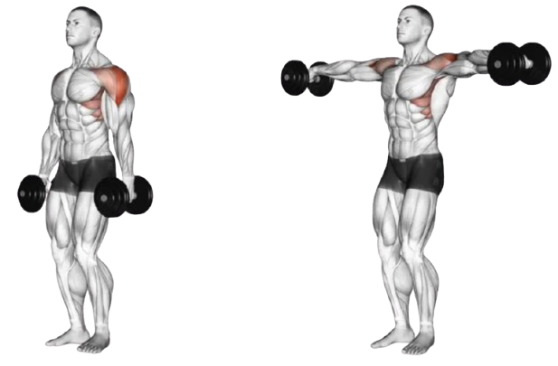

02
Shoulder
- Rotator cuff: The rotator cuff is a group of four muscles—the supraspinatus, infraspinatus, teres minor and subscapularis—that work together to provide stability for the humeral head, which is the top of the upper arm bone. They keep the shoulder in its socket. The rotator cuff muscles also play a role in lifting and rotating the arm. Rotator cuff injuries, especially dislocations, are common.

- Anterior deltoids: The front delts that help move your arm forward. They connect to your clavicle. You use your front delts if you reach for an object on a shelf.
- Lateral deltoids: Side delts that help move your arm out to the side, as well as up and down. They connect to your acromion, a bony nob on your shoulder blade. You use your side delts if you do jumping jacks.
- Posterior deltoids: Rear delts that help move your arm backward. They connect to the flat surface of your shoulder blade. You use your rear delts if you pitch a baseball.
- We are going to be focusing on the deltoids in this segment.
- Machine Shoulder Press
- Face Pulls
- Side Lateral Raise
3x8-10 (3 sets, 8-10 repitions)
The shoulder press is an upper-body-focused movement that allows you to increase your
overhead strength. When done correctly, it can lead to a significant increase in your
shoulders’ size. It’s a fantastic exercise to include in your routine, whether you’re an
athlete, a casual lifter, or an older person looking to maintain muscle mass.
As its name indicates, the shoulder press focuses on the muscles in your shoulders and upper
chest. From deltoids to triceps, the shoulder press is one of the most impactful exercises
you can do for your shoulders.

The shoulder press is an upper-body-focused movement that allows you to increase your overhead strength. When done correctly, it can lead to a significant increase in your shoulders’ size. It’s a fantastic exercise to include in your routine, whether you’re an athlete, a casual lifter, or an older person looking to maintain muscle mass.
As its name indicates, the shoulder press focuses on the muscles in your shoulders and upper chest. From deltoids to triceps, the shoulder press is one of the most impactful exercises you can do for your shoulders.
3x10-12 (3 sets, 10-12 repitions)
Face pulls use a cable machine with a rope attachment to train the rear deltoids, the
muscles in the back of the shoulders, with support from the traps, rhomboids and rotator
cuff. Strengthening these muscles can help with poor posture, improve shoulder
stability, and help with overall shoulder and back strength.
The most popular of shoulder movements typically include pressing and raise movements
which mostly work the anterior and lateral delts and neglect the rear delts. Including
rear delt exercises like the face pull is important for building strong, healthy
shoulders. It also helps to prevent muscular imbalances between the front and back of
your body, which can lead to poor posture like slumping.

Face pulls use a cable machine with a rope attachment to train the rear deltoids, the muscles in the back of the shoulders, with support from the traps, rhomboids and rotator cuff. Strengthening these muscles can help with poor posture, improve shoulder stability, and help with overall shoulder and back strength.
The most popular of shoulder movements typically include pressing and raise movements which mostly work the anterior and lateral delts and neglect the rear delts. Including rear delt exercises like the face pull is important for building strong, healthy shoulders. It also helps to prevent muscular imbalances between the front and back of your body, which can lead to poor posture like slumping.
3x10-12 (3 sets, 10-12 repitions)
The lateral raise is a strength training isolation exercise that works the
shoulders (specifically the lateral deltoids), with the trapezius (upper back)
supporting by stabilising the exercise.
This exercise involves lifting weights away from your body, out to the side.
It's an exercise which looks much easier than it is, and even using light
weights for lateral raises can help to build strength and size. An added bonus
is that lat raises can improve the range of motion in your shoulder, and help to
stabilise the shoulders.

The lateral raise is a strength training isolation exercise that works the shoulders (specifically the lateral deltoids), with the trapezius (upper back) supporting by stabilising the exercise.
This exercise involves lifting weights away from your body, out to the side. It's an exercise which looks much easier than it is, and even using light weights for lateral raises can help to build strength and size. An added bonus is that lat raises can improve the range of motion in your shoulder, and help to stabilise the shoulders.